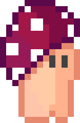
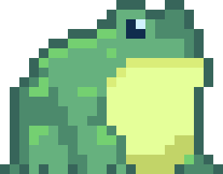
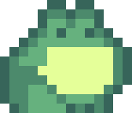
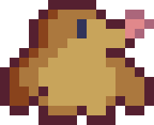

Introdução
O que é Frunbeloom?
O jogador controla um personagem que usa um cajado mágico. Ele se move com agilidade, luta contra inimigos e avança pela caverna superando obstáculos.
> DEVLOG #01_
Um jogo 2D de ação e exploração num mundo pixelado cheio de perigos e magia. Pegue o cajado, desvie com o dash e enfrente o chefe da caverna.
▶ JOGARIntrodução
O jogador controla um personagem que usa um cajado mágico. Ele se move com agilidade, luta contra inimigos e avança pela caverna superando obstáculos.

O personagem que você controla. Seu objetivo é derrotar os bichos da caverna.

Possui 2 fases e ataca principalmente com a língua.

O sapo comum te ataca pulando em cima de você.

Entra na terra para pular e te atacar.